Installation¶
Obtain DB2 Express-C image
Unzip the image and navigate to the directory containing the unzipped DB2 product installation files.
Launch the install with the “Run as Administrator” option:
If the install is launched by clicking on the “setup.exe” executable, you should right click setup.exe and choose the option “Run as Administrator”.
Note
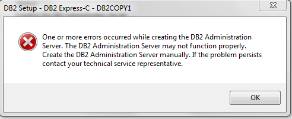 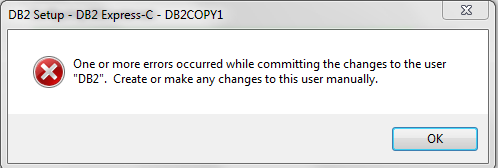 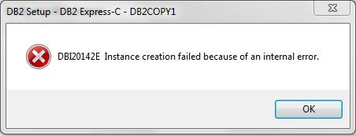 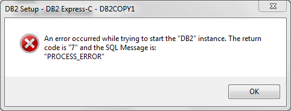“Run as Administrator” here is critical. Doing this, you can avoid following the error messages:This dues to that Windows operating systems, Vista and higher, stripp off some of the user privileges from the local admin users,and installation user account does not have the required privileges to execute tasks (create a new account (“db2admin”), create new registry keys, configure and start Windowservices, etc).You can read more about it here
- Select installation type: Typical (this is the default). The Compact option performs a basic installation, while the Custom option allows you to customize the
specific features you want to install.
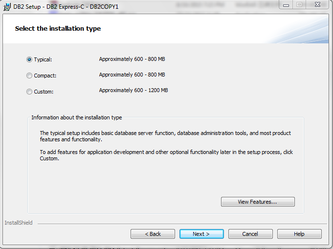Select the installation, response file creation, or both: leave the default.
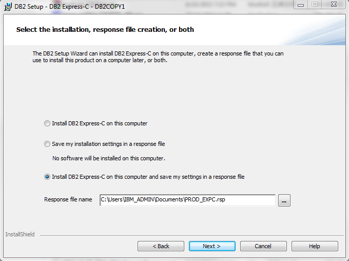Select the installation folder: default
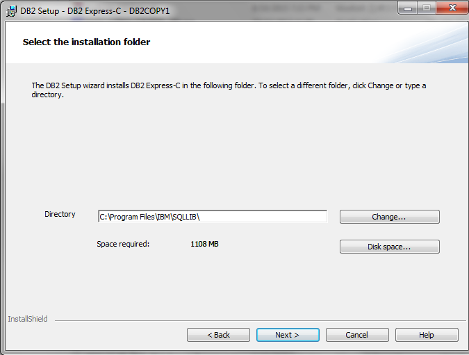Select IBM SSH server installation folder and startup option: default
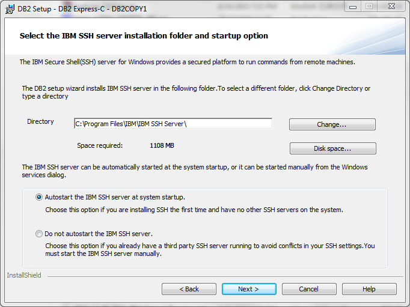Set user information for the DB2 Administration Server:
Once DB2 Express-C installed, certain DB2 processess are run as system services. These services require an operation system account in order to run. In the windows environment, using the default db2admin user account is recommended. If the user account does not yet exist, DB2 creates it in the operating system for you. You can also specify to use an existing account, but that account must have local administrator authority. We recommend using the defaults suggested. Ensure you specify a password for the account.
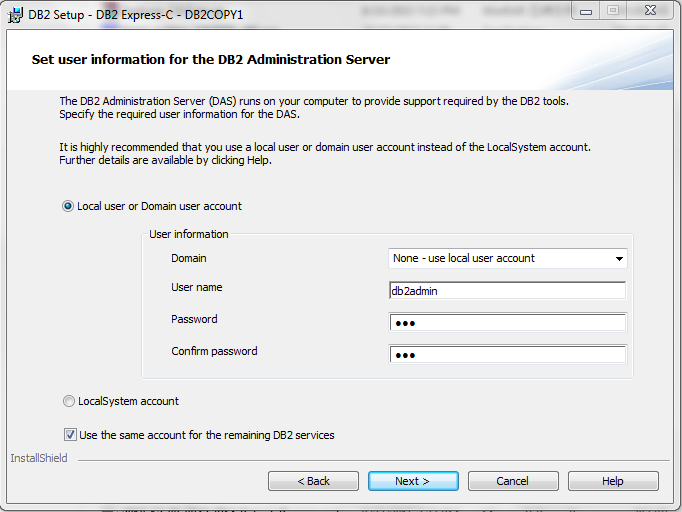Configure DB2 instances: default
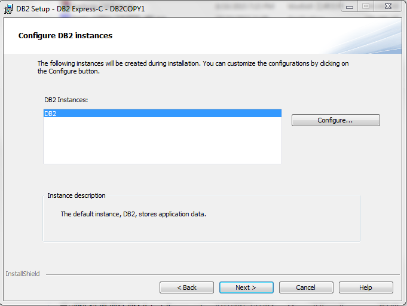Install & Finish setup
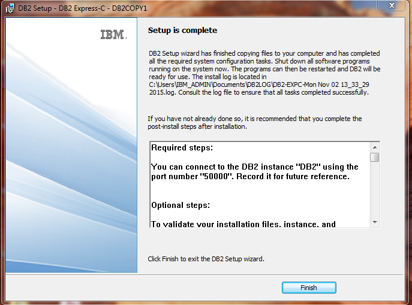See also
Read more on installation on page 54 of Getting Started with DB2 Express-C. Even it is written for v9.7, the installation procedure doesn’t change much.
Validate your DB2 installation:
Bring out db2 clp by running
db2cmdin cmd, and run the following command:
db2level - displays information about the DB2 product installed, fix pack level, and other details.
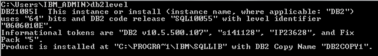db2licm - lists all the licensing information specific to your installed DB2 products
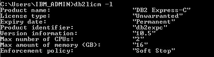
- db2val - validates your installation by verifying the code functionality of your DB2 copy. It make sure your instances are consistent, and that database creation
and database connections work.
{kind=link}
{kind=link}
{kind=link}
{kind=link}